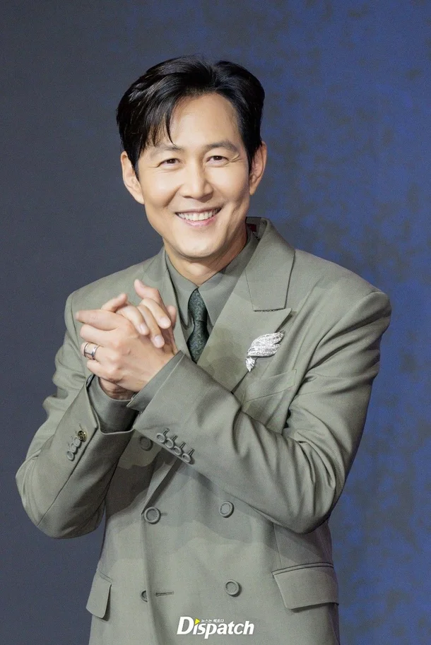

[단독] "매출 40억 넘기면, 10:0"…이정재, 대주주의 얌체 경영 : 네이트 연예

이정재와 아티스트컴퍼니(이하 아컴)의 정산 요율은 9:1이다.
이정재가 매출의 90%를 갖는다.
회사는 나머지 10%로 급여, 임대료, 관리비 등 경상비를 감당한다.
이런 9:1 구조로는 적자를 벗어나기 힘들다.
그런데 이정재는 여기에, “얼음”까지 외쳤다.
자신의 매출에 캡을 씌운 것.
그 상한선은 40억 원이다.
이정재는 매출 40억 원까지만 9:1로 나눈다.
초과 매출은, 이정재가 100% 다 갖는다.
염정아, 임지연, 김혜윤, 조이현 등의 계약서에는 이런 조항이 없다.
이정재는 회사의 주인이다.
회사 수익과 주주 이익을 책임지는 위치다.
하지만 현실은 반대다.
회사는 적자를 면치 못했고, 주가는 고점 대비 1/8 토막이 났다.
이정재는 ‘오징어 게임 2·3’으로 얼마를 벌었을까.
‘디스패치’ 취재 결과, 회당 계약금은 120만 달러(17억 원) 이상이다.
그는 13부작을 찍으면서 총 200억 원 이상 손에 쥐었다.
아컴은 얼마를 벌었을까.
이미, 몫은 정해져 있다.
수익 배분 상한선인 40억의 10%.
4억 원이 전부다.
이정재가 1,000억을 벌어도 마찬가지.
회사의 몫은 4억 원에서 얼어붙는다.
2025년 사업보고서에 따르면, 아컴의 당해 매출은 467억 원이다.
그중 이정재 매출이 절반 가까이 차지했다.
하지만 영업손실은 -40억 원.
수익성 부분에서 심각한 문제를 드러냈다.
상장시킨 코스닥을 조지는게 답 아닐까요?